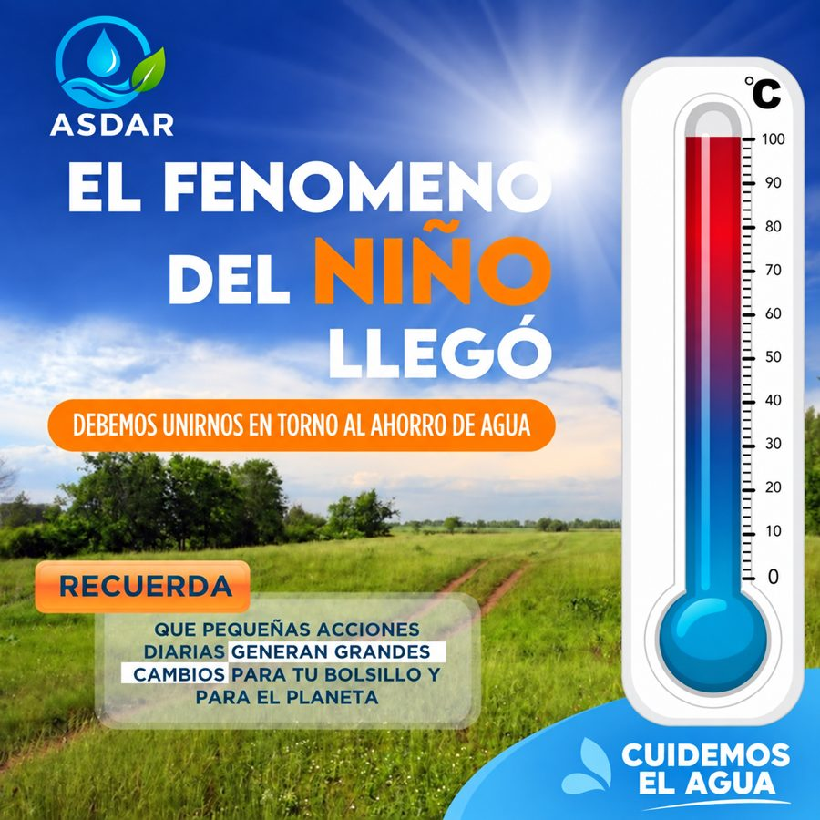

Servicio de acueducto
Conoce cómo ASDAR administra, mantiene y mejora la prestación del servicio en La Rápida.
Conocer el servicioFenómeno del Niño: cuidemos juntos el agua. El pago del servicio se realiza todos los fines de semana.
Ver avisoAsociación de Suscriptores de Acueducto La Rápida
Prestamos el servicio de acueducto con responsabilidad, participación comunitaria y protección del medioambiente.
Servicios a la comunidad
Encuentra rápidamente información sobre el servicio, reportes, documentos y novedades de ASDAR.
Conoce cómo ASDAR administra, mantiene y mejora la prestación del servicio en La Rápida.
Conocer el servicioInforma sobre fugas, daños en las redes o situaciones que puedan afectar el suministro de agua.
Realizar un reporteConsulta estatutos, reglamentos, informes y otros documentos importantes de la asociación.
Consultar documentosRevisa información sobre mantenimientos, reuniones, suspensiones programadas y actividades comunitarias.
Consultar avisos
Así trabajamos
Desde la fuente hasta cada hogar, ASDAR cuida la planta de tratamiento, mantiene las redes y protege la microcuenca para que el agua llegue a La Rápida en las mejores condiciones posibles.
Somos una entidad comunitaria sin ánimo de lucro: el servicio lo sostenemos entre todos los suscriptores.

Aviso oficial vigente
Pequeñas acciones diarias generan grandes cambios para tu bolsillo y para el planeta. Así puedes ayudar desde casa:
Recuerda: el pago del servicio se realiza todos los fines de semana. Estar al día nos permite seguir mejorando el acueducto.
¿Viste una fuga o un daño?
Avísanos sobre fugas, tubos rotos o cualquier situación que afecte el suministro. Si puedes, envía una foto y la ubicación por WhatsApp.